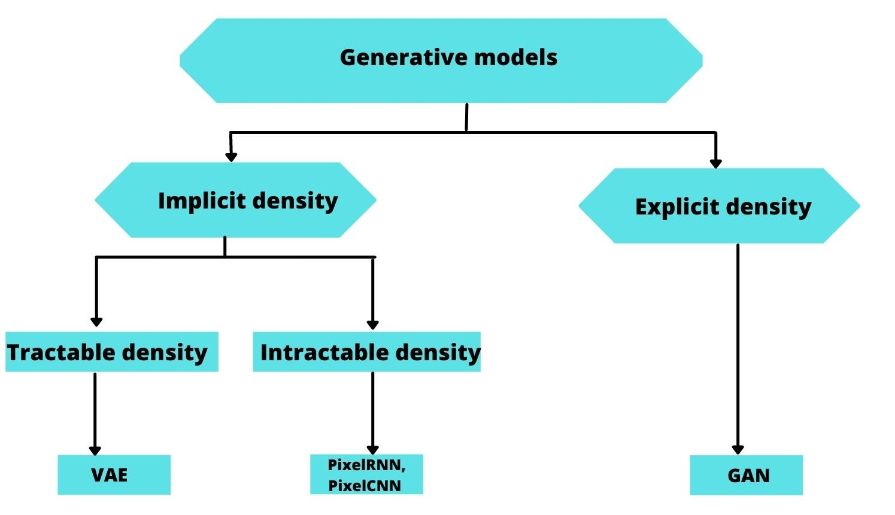

Generative Models
"A general overview"
Jan 1,2021
Introduction
Generative models are a type of neural networks dedicated for generating new data point examples. This task goes beyond the traditional pattern caputring that we find in all Neural Networks to learning the underlying distribution. This type of neural networks are excellent in tasks that require filling the blanks in data; they learn the trend/probability distribution that these data follow and hence can generate the missing ones so that they follow the same probability distribution. The goal of such models is either to generate data (text, audio, image, video etc.) from scratch (Generating a new story, script for a TV show or even photos of faces) or to transform the data to conform to a specific target like denoising a given image. Once a generative model is fully trained, it can be used to create new data that’s indistinguishable from the training set data.
Types of Generative models
Generative models are able to model very complex high dimensional distributions in two ways:
Explicitly:
In an explicit estimation we know the model’s probabilistic distribution.This Density can have a close form and be solvable in a polynomial time (A.K.A tractable) like in PixelRNN[1]. In PixelRNNs a network is trained to model the conditional distribution of every individual pixel given previous pixels(to the left and to the top). This is similar to plugging the pixels of the image into a char-rnn, but the RNNs run both horizontally and vertically over the image instead of just a 1D sequence of characters. If the density doesn't have a close form (Intractable) we then need to approximate it.Variational AutoEncoders[2] approximate those intractable conditional distributions. It's a probabilistic graphical modeling where we are maximizing a lower bound on the log likelihood of the data.
Implicitly:
In this category the model learning process is based on a very strict penalty strategy known as Adversarial training presented in the earlier work of GoodFellow Generative Adversarial Networks[3].The training process for GANs is seen as as a game(Game Theory[4]) between two separate networks: a generator network to generate new items and a second discriminative network that tries to classify samples as either coming from the true distribution p(x) or the model distribution p̂(x). Every time the discriminator notices a difference between the two distributions the generator adjusts its parameters slightly to make it go away, until at the end (in theory) the generator exactly reproduces the true data distribution and the discriminator is guessing at random, unable to find a difference(This state is called the "Equilibrium Point" as described in Saliman's work[4]).
Between these two ?
Explicit estimation tend to result in very blurry results compared with the implicit density estimation. GANs give more accurate results compared to VAEs for eg. This is due to the penalty strategy, GANs are trained in a adversarial way which lead to the loss itself being competitive. The game theory behind the GANs enable them to target more tangible features in order to reach the equilibrium point. The main advantage of GANs over the other generative models in generating data is that they can be conditioned by different inputs. For example, you can learn the mapping between two domains : satellite images to google maps. Or you can teach the generator to reproduce several classes of data: generating the MNIST dataset. Autoencoders are more suitable for compressing data to lower dimensions or generating semantic vectors from it. Where GANs are more suitable for generating data.
Conclusion :
Generative models continue to be a subject of improuvement and current research item. This type of neural networks allow us to answer more vibrant questions like: what are the underlying features of a given dataset? Answers to this question can reveal biases within the data we use to train our models. Bias in data makes the fairness of any model questionable.Another cool use case would be in data compression as well if we learn to estimate the true distribution of a given dataset then we can regenerate bigger chunks/parts of data using less inputs. This first blog post serves as a global overview of what generative models are.